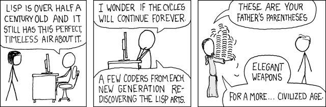
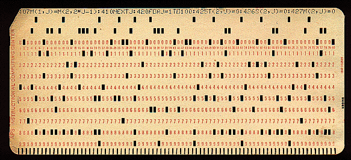

谈语法

使用和研究过这么多程序语言之后，我觉得几乎不包含多余功能的语言，只有一个：Scheme。所以我觉得它是学习程序设计最好的入手点和进阶工具。当然 Scheme 也有少数的问题，而且缺少一些我想要的功能，但这些都瑕不掩瑜。在用了很多其它的语言之后，我觉得 Scheme 真的是非常优美的语言。
要想指出 Scheme 所有的优点，并且跟其它语言比较，恐怕要写一本书才讲的清楚。所以在这篇文章里，我只提其中一个最简单，却又几乎被所有人忽视的方面：语法。
其它的 Lisp “方言”也有跟 Scheme 类似的语法（都是基于“S表达式”），所以在这篇（仅限这篇）文章里我所指出的“Scheme 的优点”，其实也可以作用于其它的 Lisp 方言。从现在开始，“Scheme”和“Lisp”这两个词基本上含义相同。
我觉得 Scheme （Lisp） 的基于“S表达式”（S-expression）的语法，是世界上最完美的设计。其实我希望它能更简单一点，但是在现存的语言中，我没有找到第二种能与它比美。也许在读过这篇文章之后，你会发现这种语法设计的合理性，已经接近理论允许的最大值。
为什么我喜欢这样一个“全是括号，前缀表达式”的语言呢？这是出于对语言结构本质的考虑。其实，我觉得语法是完全不应该存在的东西。即使存在，也应该非常的简单。因为语法其实只是对语言的本质结构，“抽象语法树”（abstract syntax tree，AST），的一种编码。一个良好的编码，应该极度简单，不引起歧义，而且应该容易解码。在程序语言里，这个“解码”的过程叫做“语法分析”（parse）。
为什么我们却又需要语法呢？因为受到现有工具（操作系统，文本编辑器）的限制，到目前为止，几乎所有语言的程序都是用字符串的形式存放在文件里的。为了让字符串能够表示“树”这种结构，人们才给程序语言设计了“语法”这种东西。但是人们喜欢耍小聪明，在有了基本的语法之后，他们开始在这上面大做文章，使得简单的问题变得复杂。
Lisp （Scheme 的前身）是世界上第二老的程序语言。最老的是 Fortran。Fortran 的程序，最早的时候都是用打孔机打在卡片上的，所以它其实是几乎没有语法可言的。

显然，这样写程序很痛苦。但是它却比现代的很多语言有一个优点：它没有歧义，没有复杂的 parse 过程。
在 Lisp 诞生的时候，它的设计者们一下子没能想出一种好的语法，所以他们决定干脆先用括号把这语法树的结构全都括起来，一个不漏。等想到更好的语法再换。
自己想一下，如果要表达一颗“树”，最简单的编码方式是什么？就是用括号把每个节点的“数据”和“子节点”都括起来放在一起。Lisp 的设计者们就是这样想的。他们把这种完全用括号括起来的表达式，叫做“S表达式”（S 代表 “symbolic”）。这貌似很“粗糙”的设计，甚至根本谈不上“设计”。奇怪的是，在用过一段时间之后，他们发现自己已经爱上了这个东西，再也不想设计更加复杂的语法。于是S表达式就沿用至今。
在使用过 Scheme，Haskell，ML，和常见的 Java，C，C++，Python，Perl，…… 之后，我也惊讶的发现， Scheme 的语法，不但是最简单，而且是最好看的一个。这不是我情人眼里出西施，而是有一定理论依据的。
首先，把所有的结构都用括号括起来，轻松地避免了别的语言里面可能发生的“歧义”。程序员不再需要记忆任何“运算符优先级”。
其次，把“操作符”全都放在表达式的最前面，使得基本算术操作和函数调用，在语法上发生完美的统一，而且使得程序员可以使用几乎任何符号作为函数名。
在其他的语言里，函数调用看起来像这个样子：f(1)，而算术操作看起来是这样：1+2。在 Lisp 里面，函数调用看起来是这样(f 1)，而算术操作看起来也是这样(+ 1 2)。你发现有什么共同点吗？那就是 f 和 + 在位置上的对应。实际上，加法在本质也是一个函数。这样做的好处，不但是突出了加法的这一本质，而且它让人可以用跟定义函数一模一样的方式，来定义“运算符”！这比起 C++ 的“运算符重载”强大很多，却又极其简单。
关于“前缀表达式”与“中缀表达式”，我有一个很独到的见解：我觉得“中缀表达式”其实是一种过时的，来源于传统数学的历史遗留产物。几百年以来，人们都在用 x+y 这样的符号来表示加法。之所以这样写，而不是 (+ x y)，是因为在没有计算机以前，数学公式都得写在纸上，写 x+y 显然比 (+ x y) 方便简洁。但是，中缀表达式却是容易出现歧义的。如果你有多个操作符，比如 1+2*3。那么它表示的是 (+ 1 (* 2 3)) 呢，还是 (* (+ 1 2) 3)？所以才出现了“运算符优先级”这种东西。看见没有，S表达式已经在这里显示出它没有歧义的优点。你不需要知道 + 和 * 的优先级，就能明白 (+ 1 (* 2 3)) 和 (* (+ 1 2) 3) 的区别。第一个先乘后加，而第二个先加后乘。
对于四则运算，这些优先级还算简单。可是一旦有了更多的操作，就容易出现混淆。这就是为什么数学（以及逻辑学）的书籍难以看懂。 实际上，那些看似复杂的公式，符号，不过是在表示一些程序里的“数据结构”，“对象”以及“函数”。大部分读数学书的时间，其实是浪费在琢磨这些公式：它们到底要表达的什么样一个“数据结构”或者“操作”！这个“琢磨”的过程，其实就是程序语言里所谓的“语法分析”（parse）。
这种问题在微积分里面就更加明显。微积分难学，很大部分原因，就是因为微积分的那些传统的运算符，其实不是很好的设计。如果你想了解更好的设计，可以参考一下 Mathematica 的公式设计。试试在 Mathematica 里面输入“单行”的微积分运算（而不使用它传统的“2D语法”）。
其实 Lisp 已经可以轻松地表示这种公式，比如对 x^2 进行微分，可以表示成
(D ‘(^ x 2) ‘x)